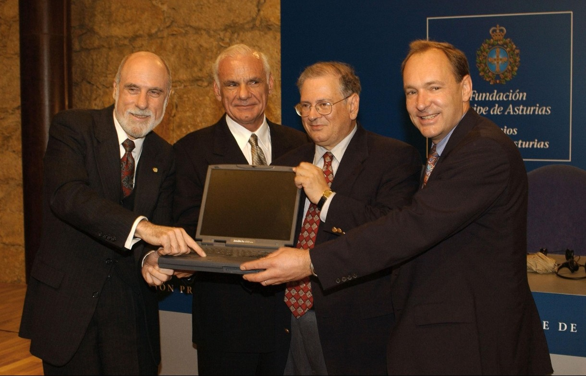

Pessoas e Tecnologias que Fizeram História
Nomes Importantes
J. C. R. Licklider
Um dos pesquisadores que ajudaram a desenvolver a ideia de computadores conectados e compartilhamento de informações. Seu trabalho na ARPA influenciou projetos posteriores de redes.
Paul Baran
Pesquisou redes distribuídas e técnicas relacionadas à comutação de pacotes, contribuindo para os conceitos que influenciaram as redes posteriores.
Leonard Kleinrock
Realizou trabalhos fundamentais sobre comunicação por pacotes e participou dos primeiros experimentos da ARPANET.
Vinton Cerf e Robert Kahn
Foram responsáveis pelo desenvolvimento dos principais conceitos do TCP/IP, permitindo a comunicação entre diferentes redes.
Robert Metcalfe e David Boggs
Participaram do desenvolvimento da Ethernet, tecnologia fundamental para redes locais.
Tim Berners-Lee
Criador da World Wide Web. Em 1989, propôs um sistema baseado em hipertextos que posteriormente deu origem à Web como conhecemos.
Robert Cailliau
Colaborou com Berners-Lee no desenvolvimento inicial da Web dentro do CERN.
"A Internet é uma coleção de redes cooperativas, interconectadas e multiprotocolo que possibilita a colaboração internacional entre milhares de organizações." - Vint Cerf, Bob Kahn e Lyman Chapin, Announcing the Internet Society (1992). (tradução português)

Vint Cerf, Robert Kahn, Tim Berners-Lee e Lawrence Roberts, vencedores do Prêmio Príncipe de Astúrias de Investigação Científica e Técnica de 2002.
Tecnologias fundamentais
ARPANET — 1969
Uma das primeiras grandes redes de computadores por comutação de pacotes e um dos principais antecedentes da Internet.
Ethernet — década de 1970
Tecnologia criada para conectar computadores em redes locais. Tornou-se uma das principais tecnologias de redes cabeadas.
TCP/IP — década de 1970 / 1983
Conjunto de protocolos que possibilitou a comunicação entre diferentes redes e se tornou a base da Internet.
World Wide Web — 1989/1991
Sistema criado por Tim Berners-Lee que tornou possível acessar documentos e informações através de páginas e hiperlinks.
Wi-Fi — 1997
Tecnologia baseada nos padrões IEEE 802.11 para comunicação em redes locais sem fio.
5G — década de 2020
Nova geração de redes móveis, oferecendo maior capacidade e menor latência para diversas aplicações.